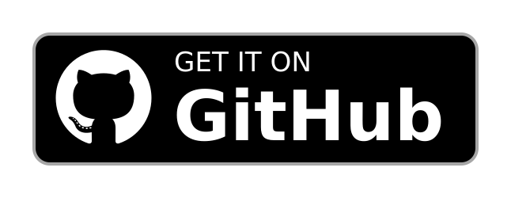
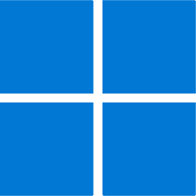

Raiden Visuals Free Download
Pilih salah satu untuk versi stable dan beta. Harap panduan instalasinya dibaca, ya.
Apa itu Raiden Visuals?
Raiden Visuals Adalah Custom Deferred Configuration Yang Dapat Mengoptimalkan Performa Vibrant Visuals Pada Minecraft Bedrock.
Keunggulan
Mengoptimalkan Bayangan Pada Vibrant Visuals.
Mengoptimalkan Refleksi Ruang Layar Pada Vibrant Visuals.
Mengoptimalkan Point Light Beserta Bayangan Pada Vibrant Visuals.
Mengoptimalkan Kabut Volumetrik Pada Vibrant Visuals.
Memperluas Opsi Jarak Render (Menjadi 1-50 Chunks).
Panduan Instalasi
ANDROID
Untuk sistem operasi Android, diperlukan aplikasi pihak ketiga seperti MB Loader, Levi Launcher, Ambient For MCPE, atau Flarial Client agar Raiden Visual dapat berfungsi.
-
MB Loader :

-
Levi Launcher :

Untuk Levi Launcher, perlu memasang MaterialBinLoader 2 agar Raiden Visuals dapat berfungsi.
-
Ambient For MCPE :
Untuk Ambient For MCPE, harus mengaktifkan fitur Shader Loader di dalam pengaturan launcher agar Raiden Visuals dapat berfungsi.
-
Flarial Client :
Untuk Flarial Client, harus mengaktifkan fitur Shader Loader melalui Flarial shortcut (tombol mengambang dengan logo Flarial). Setelah mengaktifkan Shader Loader di Flarial Client, wajib restart Flarial Client agar Raiden Visuals dapat berfungsi.

WINDOWS
Untuk sistem operasi Windows atau Linux, cukup memindahkan folder "renderer" di dalam file mcpack yang diberikan, lalu tempelkan di lokasi.
Untuk Minecraft Bedrock versi stable, buka isi folder "subpacks\OfficialFix" lalu pindahkan folder "renderer" nya ke "C:\XboxGames\Minecraft for Windows\Content\data"
Untuk Minecraft Bedrock versi preview, tidak perlu memindahkan renderer didalam folder subpacks, langsung pindahkan folder "renderer" nya ke "C:\XboxGames\Minecraft Preview for Windows\Content\data"
Pengecekan GPU untuk android
Cek Kompatibilitas GPU HP-Mu:
Tier 1 Tidak kompatibel, Tier 2 Tidak kompatibel, Tier 3 Belum kompatibel ntuk saat ini, Tier 4 Sudah kompatibel, Tier 5 Pasti kompatibel.
Jika GPU Anda masuk di Tier 3 tapi Vibrant Visuals tidak dapat digunakan maka sebentar lagi akan kompatibel di update minecraft selanjutnya.
Jika GPU Anda tidak terdaftar, maka kemungkinan besar tidak akan pernah kompatibel, solusi beli hp baru.
Tier 5 Adalah spek GPU tertinggi, sedangkan Tier 1 adalah spek GPU terendah.
Tier 1 Sama Tier 2 lebih kasihan sih akan sangat lama untuk dapat menggunakan vibrant visuals mungkin tahun depan?, itupun dengan hasil visual dan performa yang lebih rendah.
website masih dalam pengembangan terus pantau...
📝 To Do List
Perbandingan Performa Vibrant Visuals Bawaan Vs Raiden Visuals
Perbandingan Bayangan, Block Light, Refleksi, & Kabut volumetrik dari Vibrant Visuals bawaan vs Raiden Visuals
Tutorial Pemasangan untuk Android pada masing-masing Launcher mengunakan Screenhots Step By Step
Rekomendasi GPU untuk menggunakan Vibrant Visuals
Rekomendasi setingan opsi grafis Vibrant Visuals untuk performa dan kualitas
Rekomendasi Vibrant Visuals Pack Agar lebih indah dan Immersive
Join DIscord Untuk Info Update Terbaru Dan Berkomunikasi Mengenai Vibrant Visuals
Rayuan Donasi Melalui Trakteer.Id dan menunjukan kelebihanya untuk download Raiden Visuals langsung ke mediafire tanpa melewati banyak iklan